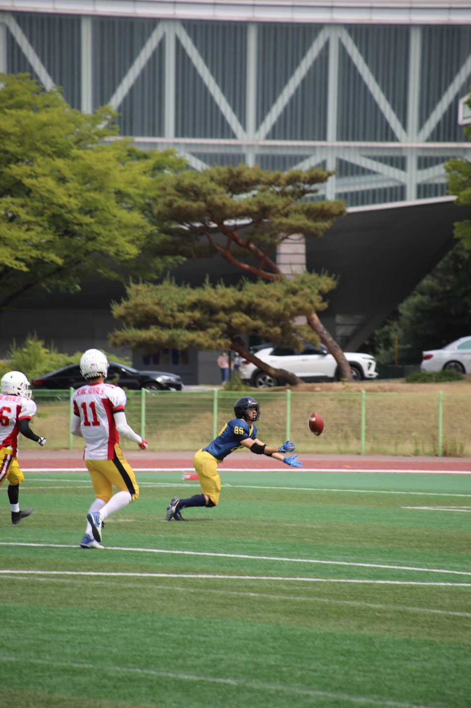

Wide Receiver

- Wide receiver (WR), also referred to as a wideout,
historically known as a split end (SE), is an eligible receiver
in gridiron football. A key skill position of the offense,
WR gets its name from the player being split out "wide" (near the sidelines),
farthest away from the rest of the offensive formation.
A forward pass-catching specialist,
the wide receiver is one of the fastest players on the
field alongside cornerbacks and running backs.
One on either extreme of the line is typical,
but several may be employed on the same play.
Through 2021 only three wide receivers,
Jerry Rice (in 1987 and 1993), Michael Thomas (in 2019),
and Cooper Kupp (in 2021) have won Offensive Player of the Year.
[1] In every other year it was awarded to either a quarterback or running back.
No wide receiver has ever won MVP. Jerry Rice is the leader in receptions,
receiving yards, and touchdowns in the all-time list for receivers
along with being a 3-time SB champion and 10-time All-Pro selections.